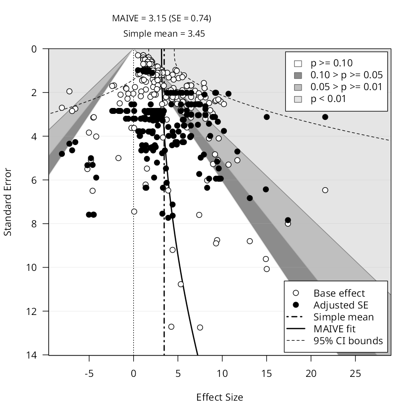

Candidates for the worked example on How to run MAIVE. Every funnel below is the plot EasyMeta returns for that subset, under the same recipe the page teaches: PET‑PEESE, log first stage, equal weights, CR2 clustered by study.
What a good example needs, and why these were hard to find. The estimates have to be spread no wider than their own standard errors, or the cloud is a flat band instead of a triangle. The sample sizes have to vary a lot, or MAIVE's fitted standard errors — the filled points — collapse into a horizontal line. The first stage has to be strong. And there has to be real asymmetry to correct. Those pull against each other: the subsets homogeneous enough to look like a funnel tend to have too little variation in sample size to identify anything.
1. Hedge-fund alpha, asset-based-style models
Estimates of hedge-fund alpha from asset-based-style pricing models, on cross-sectional samples. Asset-based-style models price funds off observable asset returns rather than statistical factors, so this is the one corner of the literature where alpha is measured against a benchmark you can actually trade.

| Simple mean | 0.33 |
|---|---|
| Plain PET‑PEESE | 0.108 |
| MAIVE | 0.047 (SE 0.116) |
| First‑stage F | 71.8 |
| Fit | PET |
| Bias test (Egger p) | 0.014 |
| Estimates / studies | 75 from 9 |
alphas: model_asset_based == 1 and data_cross_section == 1
The only candidate where the bias test rejects (Egger p = 0.014), and the correction is dramatic: a reported mean of 0.33% per month falls to 0.05%, which is the difference between a real alpha and none. First stage is the second strongest of any candidate. The fit is a straight PET line rather than a curve.
2. Electricity demand in India, average-price measures
Price elasticities of electricity demand in India, from studies that identify the elasticity off an average-price measure. India is the case where subsidised, politically set tariffs are supposed to leave demand unresponsive.

| Simple mean | -0.49 |
|---|---|
| Plain PET‑PEESE | -0.470 |
| MAIVE | -0.574 (SE 0.054) |
| First‑stage F | 20.6 |
| Fit | PEESE |
| Bias test (Egger p) | 0.203 not significant |
| Estimates / studies | 64 from 12 |
electricity: se_source == 'reported', average_price == 1, country == 'India'
PEESE is selected, so the fit visibly curves, and the largest standard error is the 95th percentile -- no single point stretches the axis. But the bias test does not reject (p = 0.20), and the correction moves the estimate away from zero rather than towards it, which is the harder story to tell first.
3. The beauty premium for high-skilled US workers
Estimates of the wage premium to physical attractiveness among high-skilled workers in the United States -- lawyers, academics, executives -- where the argument over whether beauty signals productivity or is simple discrimination is actually contested.

| Simple mean | 3.45 |
|---|---|
| Plain PET‑PEESE | 2.830 |
| MAIVE | 3.154 (SE 0.735) |
| First‑stage F | 105.6 |
| Fit | PEESE |
| Bias test (Egger p) | 0.376 not significant |
| Estimates / studies | 208 from 15 |
beauty: high_skilled_workers == 1 and country == 'United States'
The strongest first stage in the whole search (F = 106) and a curved PEESE fit, on 208 estimates from 15 studies. Against it: once standard errors are clustered by study the asymmetry is no longer significant (p = 0.38), so the page could not say there was bias to correct.
Numbers fetched live on 2026-08-24. This page is a workbench: it is not linked from the site and is excluded from the search index and the sitemap.